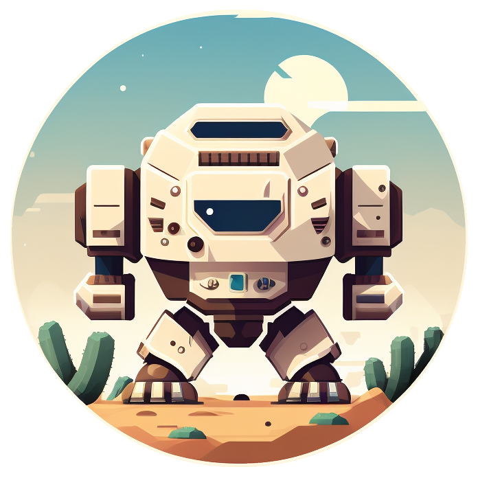
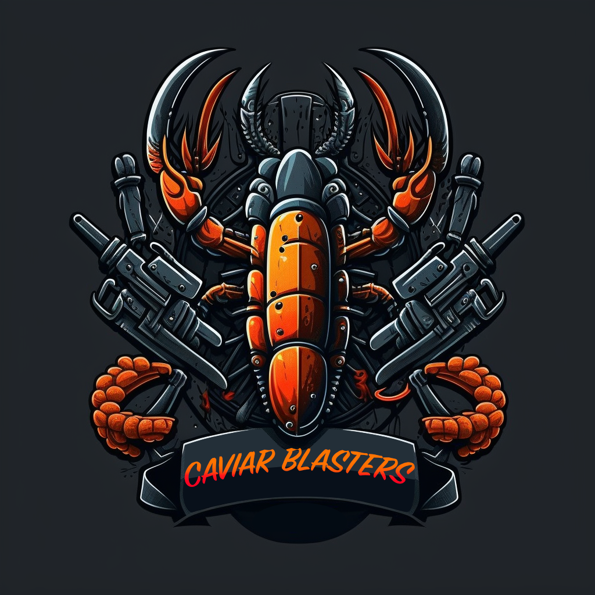
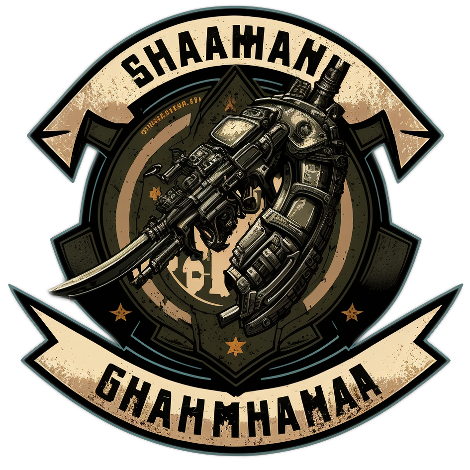

Team Biographies
Welcome all Teams to the Cartusian Invitational!
We at the Participant Commitee welcome you, the valued participants, to the galaxies most exclusive event.
Below you'll find some information about your fellow participants. Make friends, work together, and enjoy the Cartusian Invitational!
Team breakdown
Tender Loving Cuts

4 AI Battledroids from the Tosnap & lillysponge Corporatation.
They hope to dispell the incorrect and harmful rumours that early models have an AI programming bug that causes far fetched reasoning to justify immoral actions as ethical.
Helping to disprove these rumours is their 5th member, Secret, a Ysoki who lives happily locked inside a cage deep within the prisoner containment hold of TLC 1635.
Members:
- TLC 1635
- TLC 1636
- TLC 1637
- TLC 30045
- Secret
Team Terraforma

This team of terraform specialists is comprised of a seasoned explorer, an atmospheric manipulation specialist, a geologist skilled in identifying valuable resources, a weapons expert, and exobiologist. They aim to find new terraforming opportunities and are well-equipped with an All Terrain Transport Vehicle and mining equipment. They understand the competition is deadly but have stated they will use their equipment for defense, but only resort to lethal force when necessary.
Members:
- Dr. Emily Lin
- Brevan Trill
- Tarnara Dux
- M'ruk
- Zara Ventis
Team Happy Flighticons

Well, someone's been reading the rules! It seems these Team Bio writers are assigned to the teams, and therefor not protected by the rules of collateral damage.
As i look upon the corpse of this previous teams writer, i can safely say that this team is great. and i'm really happy, and in no way do they come across in anyway other than a happy bright fluffy team.
members:
- Fiend
- Undying
- Corruptions
- Kanker
- Ewe
Relic Appreciation Society

hello there hello there hello there hello there hello there hello there hello there hello there hello there hello there hello there hello there hello there hello there hello there hello there hello there hello there
Team Caviar Blasters

Inexperience doesn't stand in the way of entering this Invitational! although likely stands in the way of winning.
Our Charity team even come dressed in comical gear, with only a sword, knife, and pistol between them!
King Dumum will generously give all profits from placed bets on Caviar Blasters to the Cartusian System Historical and Religious Trust; so consider placing an addtional bet for our early leavers!
Members:
GTCHA
Al
Team Shaaman Ghahmhanaa

5 highly decorated mercenaries with a combined 96 years experience.
The team of 16 years holds 6 of the 7 issued Galactic medals of Distinction in Combat, and all 5 members have individually won the OneIn5000: battle for life event.
Although not winning last year, they are the only non-winners in the history of the Invitational to survive.
Members:
- Captain Blake "Thunderbolt" Johnson
- Colonel Natasha "Black Widow" Ivanova
- Major Max "The Hammer" Ramirez
- Lieutenant Kira "Nightshade" Lee
- Sergeant Jack "The Ripper" Thompson